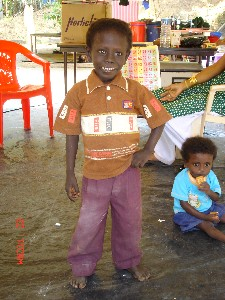

kin term
ɑbɑtr आबात्र MORPH: ɑb-ɑtr. Etym: Bale; बाले. N सं. fatherhood; पितृत्व. SD: kin term, सम्बंधी वाचक शब्दावली.
ɑbiŋɑ आबीङा Etym: Bale; South Andaman; बाले; दक्षिणी अण्डमान. N सं. spouse; जीवन-साथी; पति या पत्नी. SD: kin term, सम्बंधी वाचक शब्दावली.
ɑkɑbuɑ आकाबूआ MORPH: ɑkɑ-buɑ. Etym: Bale; South Andaman; बाले; दक्षिणी अण्डमान. N सं. brother-in-law; sister-in-law; साला या जीजा (ससुराल के समकक्षी रिश्ते); साली. SD: kin term, सम्बंधी वाचक शब्दावली.
ɑkɑkuɑm आकाकूआम MORPH: ɑkɑ-kuɑm. Etym: Bale; South Andaman; बाले; दक्षिणी अण्डमान. N सं. relatives; रिश्तेदार. SD: kin term, सम्बंधी वाचक शब्दावली.
ɑkɑmimitɑrɑtob आकामीमीतारातोब MORPH: ɑkɑ-mimi-tɑrɑ-tob. N सं. grandmother, paternal or maternal; दादी या नानी. SD: kin term, सम्बंधी वाचक शब्दावली.
 ɑkɑʈɑ आकाटा MORPH: ɑ-kɑʈɑ. N सं. daughter/ young girl; बेटी/ जवान लड़की.
ɑkɑʈɑ आकाटा MORPH: ɑ-kɑʈɑ. N सं. daughter/ young girl; बेटी/ जवान लड़की.  ʈʰut tʰire ɑkɑʈɑ-nel tɑpʰul ठूत थीरे आकाटानेल ताफूल. I have two daughters. मेरी दो बेटियां हैं।. SD: kin term, सम्बंधी वाचक शब्दावली.
ʈʰut tʰire ɑkɑʈɑ-nel tɑpʰul ठूत थीरे आकाटानेल ताफूल. I have two daughters. मेरी दो बेटियां हैं।. SD: kin term, सम्बंधी वाचक शब्दावली.
ɑkɑyɑt आकायात MORPH: ɑkɑ-yɑt. Etym: Bale; South Andaman; बाले; दक्षिणी अण्डमान. N सं. relationship between parents and parents-in-law; समधी-समधिन का रिश्ता. SD: kin term, सम्बंधी वाचक शब्दावली.
ɑmɑe आमाए MORPH: ɑ-mɑe. VAR: ɑmɑi आमाई. MORPH: ɑ-mɑi. N सं. father; पिता.  ʈʰɑ mɑe din toyɑ ʈʰi ekjirɑ kɔm ठा माए दीन तोया ठी एक्जीरा कौम. as my father told me I did. जैसा मेरे पापा ने बताया, वैसा मैंने किया।. ɑkɑ-mɑi आकामाई. his/her father. उसके पिता. SD: kin term, सम्बंधी वाचक शब्दावली.
ʈʰɑ mɑe din toyɑ ʈʰi ekjirɑ kɔm ठा माए दीन तोया ठी एक्जीरा कौम. as my father told me I did. जैसा मेरे पापा ने बताया, वैसा मैंने किया।. ɑkɑ-mɑi आकामाई. his/her father. उसके पिता. SD: kin term, सम्बंधी वाचक शब्दावली.
ɑmɑecɔkʰɔkɔe आमाएचौखौकौए MORPH: ɑ-mɑe-cɔkʰɔ-kɔe. N सं. father’s elder brother; ताऊ, पिता के बड़े भाई. ʈʰɑ-mɑe-cɔkʰɔ-kɔe ठामाएचौखौकौए. my father’s elder brother. मेरे ताऊ; मेरे पिता के बड़े भाई. SD: kin term, सम्बंधी वाचक शब्दावली.
ɑmɑerɑsulutʰu आमाएरासूलूथू MORPH: ɑ-mɑe-rɑ-sulu-tʰu. VAR: ɑ-mɑi-rɑ-sulu-tʰu आमाईरासूलूथू. N सं. father’s younger brother; चाचा, पिता का छोटा भाई. ʈʰɑ-mɑe-rɑ-sulu-tʰu ठामाएरासूलूथू. my father’s younger brother. मेरा चाचा; मेरे पिता का छोटा भाई. SD: kin term, सम्बंधी वाचक शब्दावली.
ɑmɑeterbui आमाएतेरबूई MORPH: ɑ-mɑe-ter-bui. N सं. stepfather; सौतेला बाप. ʈʰɑ-mɑe-ter-bui ठामाएतेरबूई. my stepfather. मेरा सौतेला बाप. SD: kin term, सम्बंधी वाचक शब्दावली.
ɑmɑetɔɑtʰu आमाएतौआथू MORPH: ɑ-mɑe-tɔɑ-tʰu. VAR: ɑ-mɑi-cɔkɔ-kɔi आमाईचौकौकौई. N सं. father’s eldest brother; सबसे बड़े ताऊ, पिता के सबसे बड़े भाई. ʈʰɑ-mɑe-tɔɑ-tʰu ठामाएतौआथू. my father’s eldest brother. मेरे सबसे बड़े ताऊ. SD: kin term, सम्बंधी वाचक शब्दावली.
ɑmɑikɑʈʰɑmɑi आमाईकाठामाई MORPH: ɑ-mɑi-kɑ-ʈʰɑ-mɑi. N सं. father’s father; दादा, पिता के पिता. ʈʰɑ-mɑi-kɑ-ʈʰɑmɑi ठामाईकाठामाई. my grandfather. मेरा दादा. SD: kin term, सम्बंधी वाचक शब्दावली.
ɑmɑitoɑtʰumimi आमाईतोआथूमीमी MORPH: ɑ-mɑi-toɑ-tʰu-mimi. N सं. wife of father’s elder brother; ताई, पिता के बड़े भाई की पत्नी. ʈʰɑ-mɑi-toɑ-tʰu-mimi ठामाईतोआथूमीमी. my aunt, wife of my father’s elder brother. मेरी ताई. SD: kin term, सम्बंधी वाचक शब्दावली.
ɑmɑyexe आमाऽयेखे MORPH: ɑ-mɑy-exe. N सं. wife’s father; ससुर, पत्नी का पिता. SD: kin term, सम्बंधी वाचक शब्दावली.
ɑmimi आमीमी MORPH: ɑ-mimi. N सं. mother; मां. ɑkɑ-mimi आकामीमी. his/her mother. उसकी मां. ʈʰ-ɑ-mimi ठामीमी. my mother. मेरी मां. SD: kin term, सम्बंधी वाचक शब्दावली.
ɑmimikɑmɑi आमीमीकामाई MORPH: ɑ-mimi-kɑ-mɑi. N सं. grandfather; नाना, मां का पिता. ʈʰ-ɑ-mimi-kɑ-mɑi ठामीमीकामाई. my grandfather; my mother’s father. मेरे नाना; मेरी मां का पिता. SD: kin term, सम्बंधी वाचक शब्दावली.
ɑmimikɑmimi आमीमीकामीमी MORPH: ɑmimi-kɑ-mimi. N सं. grandmother; नानी, मां की मां. ʈʰ-ɑ-mimi-kɑ-mimi ठामीमीकामीमी. my maternal grandmother. मेरी नानी. SD: kin term, सम्बंधी वाचक शब्दावली.
ɑmimirɑsulutʰui आमीमीरासूलूथूई MORPH: ɑ-mimi-rɑ-sulu-tʰui. N सं. mother’s younger sister; मौसी; मां की छोटी बहन. ʈʰ-ɑ-mimi-rɑ-sulu-tʰui ठामीमीरासूलूथूई. my mother’s younger sister. मेरी मौसी; मेरी मां की छोटी बहन. SD: kin term, सम्बंधी वाचक शब्दावली.
ɑmimitoɑtuebui आमीमीतोआतूएबूई MORPH: ɑ-mimi-toɑ-tue-bui. N सं. aunt, wife of mother’s brother; मामी, मां के भाई की पत्नी. ʈʰ-ɑ-mimi-toɑ-tue-bui ठा मीमी तोआ तूये बूई. my aunt, wife of mother’s brother. मेरी मामी. SD: kin term, सम्बंधी वाचक शब्दावली.
ɑmimixe आमीमीखे MORPH: ɑ-mimi-xe. N सं. wife’s mother; सास, पत्नी की मां. SD: kin term, सम्बंधी वाचक शब्दावली.
 ɑrɑbelo2 आराबेलो MORPH: ɑrɑ-belo. N सं. younger sister; छोटी बहन. SD: kin term, सम्बंधी वाचक शब्दावली. SEE: ɑrɑbelo1 ‘index finger’ ‘तर्जनी आराबेलोhm:{1}’.
ɑrɑbelo2 आराबेलो MORPH: ɑrɑ-belo. N सं. younger sister; छोटी बहन. SD: kin term, सम्बंधी वाचक शब्दावली. SEE: ɑrɑbelo1 ‘index finger’ ‘तर्जनी आराबेलोhm:{1}’.
 ɑrɑbelošip आराबेलोशीप MORPH: ɑrɑ-belošip. Etym: Bo; बो. VAR: ɑrɑ-belɔšip आराबेलौशीप; ɑɽɑbelɔšiːp आड़ाबेलौशीऽप. N सं. youngest of the siblings; सबसे छोटा भाई या बहन. SD: kin term, सम्बंधी वाचक शब्दावली.
ɑrɑbelošip आराबेलोशीप MORPH: ɑrɑ-belošip. Etym: Bo; बो. VAR: ɑrɑ-belɔšip आराबेलौशीप; ɑɽɑbelɔšiːp आड़ाबेलौशीऽप. N सं. youngest of the siblings; सबसे छोटा भाई या बहन. SD: kin term, सम्बंधी वाचक शब्दावली.
ɑrɑːbɛːlokɑ आराऽबैऽलोका MORPH: ɑrɑː-bɛːlokɑ. N सं. younger brother-in-law, wife’s younger brother; छोटा साला. SD: kin term, सम्बंधी वाचक शब्दावली.
ɑrɑdoʈot आरादोटोत MORPH: ɑrɑ-doʈot. Etym: Bale; बाले. N सं. younger one; अनुज. SD: kin term, सम्बंधी वाचक शब्दावली.
ɑrɑsulutʰuikɑːʈɑŋsɔmɑk आरासूलूथूईकाऽटाङसौमाक MORPH: ɑrɑ-sulu-tʰuikɑːʈɑŋ-sɔmɑk. N सं. sister’s husband; बहन का पति; बहनोई; जीजा. ʈʰ-ɑrɑ-sulu-tʰuikɑːʈɑŋ-sɔmɑk ठारासूलूथूईकाऽटाङसौमाक. my sister’s husband; brother-in-law. मेरी बहन का पति या बहनोई; जीजा. SD: kin term, सम्बंधी वाचक शब्दावली.
 ɑrɑšuluʈʰuo आराशूलूठूओ MORPH: ɑrɑ-šulu-ʈʰuo. VAR: ɑrɑ-sulu-tʰui-ʈoʈʈɑ आरासूलूथूईटोट्टा; ɑrɑ-sulu-ʈʰu-ʈoːɑ-tʰu रआरासूलूठूटोऽआथू; o-ʈʰɑrɑ-sulu-tʰue ओठारासूलूथूए. N सं. younger sibling; छोटी बहन या भाई.
ɑrɑšuluʈʰuo आराशूलूठूओ MORPH: ɑrɑ-šulu-ʈʰuo. VAR: ɑrɑ-sulu-tʰui-ʈoʈʈɑ आरासूलूथूईटोट्टा; ɑrɑ-sulu-ʈʰu-ʈoːɑ-tʰu रआरासूलूठूटोऽआथू; o-ʈʰɑrɑ-sulu-tʰue ओठारासूलूथूए. N सं. younger sibling; छोटी बहन या भाई.  o-ʈʰɑrɑ-šulu-ʈʰuo ओठाराशूलूठूओ. my younger sibling. मेरा छोटा भाई/ बहन. SD: kin term, सम्बंधी वाचक शब्दावली.
o-ʈʰɑrɑ-šulu-ʈʰuo ओठाराशूलूठूओ. my younger sibling. मेरा छोटा भाई/ बहन. SD: kin term, सम्बंधी वाचक शब्दावली.
ɑrɑsuluʈʰuʈoʈʈɑ आरासूलूठूटोट्टा MORPH: ɑrɑ-sulu-ʈʰu-ʈoʈʈɑ. VAR: ɑrɑsuluʈʰutoːɑ आरासूलूठूतोऽआ. MORPH: ɑrɑ-su-lu-ʈʰu-toːɑ. VAR: utoɑtʰuʈoʈʈɑ ऊतोआथूटोट्टा. N सं. elder brother; बड़ा भाई. ʈʰɑrɑ-sulu-ʈʰu-ʈoʈʈɑ ठारा सूलू ठूटोट्टा. my elder brother. मेरा बड़ा भाई. SD: kin term, सम्बंधी वाचक शब्दावली.
ɑrdotot आरदोतोत MORPH: ɑr-dotot. Etym: Bale; South Andaman; बाले; दक्षिणी अण्डमान. N सं. born after (me); अनुज. SD: kin term, सम्बंधी वाचक शब्दावली.
 |
 ɑʈoʈɑ1 आटोटा VAR: ɑʈoʈʈɑ आटोट्टा. N सं. boy; son; लड़का; बेटा.
ɑʈoʈɑ1 आटोटा VAR: ɑʈoʈʈɑ आटोट्टा. N सं. boy; son; लड़का; बेटा.  ɑʈoʈɑ ereŋkʰolebom आटोटा एरेङखोलेबोम. The boy is playing. लड़का खेल रहा है।. SD: kin term, सम्बंधी वाचक शब्दावली, people, लोग. SEE: ɑʈoʈɑ2 ‘man, young’ ‘आदमी, जवान आटोटाhm:{2}’.
ɑʈoʈɑ ereŋkʰolebom आटोटा एरेङखोलेबोम. The boy is playing. लड़का खेल रहा है।. SD: kin term, सम्बंधी वाचक शब्दावली, people, लोग. SEE: ɑʈoʈɑ2 ‘man, young’ ‘आदमी, जवान आटोटाhm:{2}’.
belei बेलेई N सं. young sister; जवान बहन. SD: kin term, सम्बंधी वाचक शब्दावली.
boɛ बोऐ N सं. spouse; पत्नी/पति. ʈʰ-e-boɛ ठेबोऐ. my spouse. मेरी पत्नी/पति. SD: kin term, सम्बंधी वाचक शब्दावली.
cɔːy चौऽय N सं. mother’s mother; मां की मां. SD: kin term, सम्बंधी वाचक शब्दावली.
cɔːye चौऽये N सं. father’s sister’s husband; फूफा. SD: kin term, सम्बंधी वाचक शब्दावली.
eboe एबोए MORPH: e-boe. VAR: e-bɔe एबौए; e-bui एबूई; e-boi एबोई; ɛ-boi ऐबोई. N सं. husband; wife; spouse; पति; पत्नी; जीवन-साथी.  ʈʰeboi ठेबोई. my spouse. मेरा पति या पत्नी. SD: kin term, सम्बंधी वाचक शब्दावली.
ʈʰeboi ठेबोई. my spouse. मेरा पति या पत्नी. SD: kin term, सम्बंधी वाचक शब्दावली.
eboitoɑtʰu एबोईतोआथू MORPH: e-boi-toɑ-tʰu. N सं. husband’s elder brother; जेठ; पति के बड़े भाई. ʈʰ-e-boi-toɑ-tʰu ठेबोईतोआथू. my husband’s elder brother. मेरे जेठ; मेरे पति के बड़े भाई. SD: kin term, सम्बंधी वाचक शब्दावली. NT: Literal meaning: boy born before my husband. शाब्दिक अनुवादः ‘मेरे पति के पहले पैदा होने वाले अग्रज’।.
eburɑːculuttʰuːwe एबूराऽचूलूत्थूऽवे MORPH: e-burɑːculuttʰuːwe. N सं. wife’s brother; साला. ʈʰeburɑːculuttʰuːwe ठेबूराऽचूलूत्थूऽवे. my wife’s brother. मेरा साला. SD: kin term, सम्बंधी वाचक शब्दावली.
eccɑːkko एच्चाऽक्को N सं. younger brother; छोटा भाई. SD: kin term, सम्बंधी वाचक शब्दावली.
ecɔkʰɔ एचौखौ MORPH: e-cɔkʰɔ. N सं. brother, elder; बड़ा भाई. ʈʰɛ-cɔkʰɔ-kɔi ठैचौखौकौई. my elder brother. मेरा बड़ा भाई. SD: kin term, सम्बंधी वाचक शब्दावली.
entoɑkɑŋɑ एन्तोआकाङा MORPH: en-to-ɑkɑ-ŋɑ. Etym: Bale; South Andaman; बाले; दक्षिणी अण्डमान. N सं. elder, he who was born before me; अग्रज, वह जो मेरे पहले जन्मा. SD: kin term, सम्बंधी वाचक शब्दावली.
eptɑruoŋɑ1 एप्तारूओङा MORPH: ep-tɑruo-ŋɑ. N सं. stepchild; सौतेला बच्चा. SD: kin term, सम्बंधी वाचक शब्दावली. SEE: eptɑruoŋɑ2 ‘younger stepbrother or stepsister’ ‘छोटा सौतेला भाई या बहन एप्तारूओङाhm:{2}’.
eptɑruoŋɑ2 एप्तारूओङा MORPH: ep-tɑruo-ŋɑ. Etym: Bale; South Andaman; बाले; दक्षिणी अण्डमान. N सं. younger stepbrother or stepsister; छोटा सौतेला भाई या बहन. SD: kin term, सम्बंधी वाचक शब्दावली. SEE: eptɑruoŋɑ1 ‘stepchild’ ‘सौतेला बच्चा एप्तारूओङाhm:{1}’.
erɑbelokɑ एराबेलोका MORPH: erɑ-belokɑ. VAR: erɑː-bɛloːkɑ एराऽबैलोऽका. N सं. youngest of the siblings; भाई या बहन में सबसे छोटा. SD: kin term, सम्बंधी वाचक शब्दावली.
erboi2 एरबोई MORPH: er-boi. N सं. spouse; जीवन-साथी; पति या पत्नी. SD: kin term, सम्बंधी वाचक शब्दावली. SEE: erboi1 ‘obedient’ ‘आज्ञाकारी एरबोईhm:{1}’.
ertɛccɔkʰɔ एरतैच्चौखौ MORPH: er-tɛc-cɔkʰɔ. VAR: er-tɛkcɔːkkɔ एरतैकचौऽककौ. ADJ वि. middle (brother); मंझला (भाई); मध्य. SD: kin term, सम्बंधी वाचक शब्दावली.
ɛbɔitɛrtubui ऐबौईतैरतूबूई MORPH: ɛ-bɔi-tɛr-tu-bui. N सं. co-wife; सौतन. SD: kin term, सम्बंधी वाचक शब्दावली.
ɛcɔkʰošip1 ऐचौखोशीप MORPH: ɛ-cɔkʰo-šip. VAR: eccɑːkkosip एच्चाऽक्कोसीप. N सं. brother’s wife; father’s sister; भाभी; बुआ. SD: kin term, सम्बंधी वाचक शब्दावली. SEE: ɛcɔkʰošip2 ‘sister, elder’ ‘बहन, बड़ी ऐचौखोशीपhm:{2}’.
ɛcɔkʰošip2 ऐचौखोशीप MORPH: ɛ-cɔkʰo-šip. N सं. elder sister; बड़ी बहन. SD: kin term, सम्बंधी वाचक शब्दावली. SEE: ɛcɔkʰošip1 ‘brother’s wife; father’s sister’ ‘भाभी; बुआ ऐचौखोशीपhm:{1}’.
ɛtoɔʈʰue ऐतोऔठूए MORPH: ɛ-toɔ-ʈʰue. N सं. elder brother; बड़ा भाई; अग्रज. ʈʰ-ɛ-toɔ-ʈʰue ठैतोऔठूए. my elder brother. मेरा बड़ा भाई. SD: kin term, सम्बंधी वाचक शब्दावली. NT: Literal meaning: boy born before me. शाब्दिक अर्थः लड़का जो मुझसे पहले पैदा हुआ हो।.
ɛttɑpʰul ऐत्ताफूल MORPH: ɛttɑ-pʰul. N सं. one who loses a sibling; जिसने अपना भाई या बहन खो दिया हो. o-tuɑ-tui-e-bi-pʰul-u ओतूआतूईएबीफूलू. He has lost his sibling. उसके भाई/बहन का स्वर्गवास हो गया।. SD: kin term, सम्बंधी वाचक शब्दावली.
ɛyccɑkoci ऐयच्चाकोची MORPH: ɛy-ccɑko-ci. N सं. father’s sister’s husband; फूफा. SD: kin term, सम्बंधी वाचक शब्दावली.
ɛycokɔkɑ ऐयचोकौका VAR: ɑy-cɑːxokɑ आय्चाऽखोका. N सं. wife’s brother (elder); साला, पत्नी का भाई (बड़ा). nɑycɑːxokɑ नायचाऽखोका. your elder brother-in-law. तुम्हारा बड़ा साला. SD: kin term, सम्बंधी वाचक शब्दावली.
imoː ईमोऽ VAR: immɔ ईम्मौ. N सं. kinship term for husband/ wife; husband, wife (term of address); पति, पत्नी के लिये सम्बंध शब्द; पति या पत्नी (संबोधक शब्द). SD: kin term, सम्बंधी वाचक शब्दावली.
jɑt जात N सं. grandchild; पोता या पोती. SD: kin term, सम्बंधी वाचक शब्दावली.
jiːli जीऽली N सं. father’s brother’s wife; ताई या चाची. SD: kin term, सम्बंधी वाचक शब्दावली.
kɑʈɑ1 काटा N सं. girl who has eaten turtle; वह लड़की जिसने कछुए का मांस खाया हो. SD: people, लोग, kin term, सम्बंधी वाचक शब्दावली. SEE: kɑʈɑ2 ‘last’ ‘अंतिम काटाhm:{2}’.
kʰimile खीमीले N सं. wife’s sister’s husband; साढू, पत्नी की बहन का पति. SD: kin term, सम्बंधी वाचक शब्दावली. NT: Generally, the wife’s sister’s husband and the male ego (self) go through the puberty ceremony together as most often they are of the same age. दो साढुओं की निकटता का द्योतक।. SEE: kʰimil1 ‘friends of youth; chums’ ‘दोस्त; यार खीमीलhm:{1}’.
korɔmolɛbik कोरौमोलैबीक N सं. wife of the first man; पहले पुरुष की पत्नी. SD: kin term, सम्बंधी वाचक शब्दावली.
 mɑi माई VAR: mɑy माय. Etym: North Andaman; उत्तरी अण्डमान. N सं. father; sir; पिता; महाशय. SD: kin term, सम्बंधी वाचक शब्दावली, social organization, सामाजिक व्यवस्था.
mɑi माई VAR: mɑy माय. Etym: North Andaman; उत्तरी अण्डमान. N सं. father; sir; पिता; महाशय. SD: kin term, सम्बंधी वाचक शब्दावली, social organization, सामाजिक व्यवस्था.
mɑirɑtob माईरातोब MORPH: mɑirɑ-tob. N सं. grandfather; दादा या नाना. SD: kin term, सम्बंधी वाचक शब्दावली.
mɑmɑ मामा N सं. grandparent; दादा; दादी; नाना; नानी. SD: kin term, सम्बंधी वाचक शब्दावली.
mɑyɑ माया N सं. deceased, used for forefathers; दिवंगत; पूर्वज. SD: kin term, सम्बंधी वाचक शब्दावली.
mime मीमे N सं. brother’s wife; भाभी, भाई की पत्नी. SD: kin term, सम्बंधी वाचक शब्दावली. NT: Also used for elderly women. बुजुर्ग महिला को पुकारने का शब्द।.
mimi मीमी Etym: North Andaman; उत्तरी अण्डमान. N सं. mother; any elderly lady; madam; मां; वृद्ध महिला को बुलाने का शब्द; मैडम. ʈʰ-ɑrɑ-lišu-pʰu ʈʰɑ-mimi-pʰu ठारालीशूफू ठामीमीफू. Neither my sister nor my mother (came). न तो मेरी बहन न ही मेरी मां (आई)।. SD: kin term, सम्बंधी वाचक शब्दावली, social organization, सामाजिक व्यवस्था.
mimitɑrɑtom मीमीतारातोम MORPH: mimi-tɑrɑ-tom. N सं. elderly woman, grandmother; बुढ़िया, दादी या नानी. ɑkɑ-mimi-tɑrɑ-tom आकामीमीतारातोम. his elderly woman (grandmother). उसकी बुढ़िया (दादी या नानी). SD: kin term, सम्बंधी वाचक शब्दावली.
mimitoɑtue मीमीतोआतूए MORPH: mimi-to-ɑ-tue. N सं. mother’s brother; मामा. ʈʰ-ɑ-mimi-toɑ-tue ठामीमीतोआतूये. my mother’s brother; my uncle. मेरी मां का भाई; मेरा मामा. SD: kin term, सम्बंधी वाचक शब्दावली.
muxuye मूखूये N सं. father’s sister; बुआ. SD: kin term, सम्बंधी वाचक शब्दावली.
nɔŋettʰuw नौङेत्थूव MORPH: nɔŋ-ettʰuw. N सं. sister’s husband; बहन का पति; बहनोई; जीजा. SD: kin term, सम्बंधी वाचक शब्दावली.
nulebɑbɑ नूलेबाबा MORPH: nule-bɑbɑ. N सं. forefathers; पूर्वज. SD: kin term, सम्बंधी वाचक शब्दावली.
nuʈuttuːne नूटूत्तूऽने N सं. brother’s wife; भाभी, भाई की पत्नी. SD: kin term, सम्बंधी वाचक शब्दावली.
opontɔplɔkɔ ओपोन्तौपलौकौ N सं. alone, one who is left alone; अकेला. SD: kin term, सम्बंधी वाचक शब्दावली.
otɑrɑiculute ओताराईचूलूते MORPH: ot-ɑrɑi-culute. Etym: North Andaman; उत्तरी अण्डमान. N सं. he who was born after me; अनुज, वह जो मेरे बाद जन्मा हो. SD: kin term, सम्बंधी वाचक शब्दावली. NT: Present Great Andamanese pronounce the word as ‘tʰɑrɑ-sulu-tʰue’. आजकल इस शब्द का उच्चारण ‘थारा-सूलू-थूए’ है।.
otcɑtŋɑ ओत्चात्ङा MORPH: ot-cɑt-ŋɑ. Etym: Bale; South Andaman; बाले; दक्षिणी अण्डमान. ADJ वि. adopted; गोद लिया हुआ. SD: kin term, सम्बंधी वाचक शब्दावली.
otem ओतेम Etym: Bale; South Andaman; बाले; दक्षिणी अण्डमान. N सं. son’s wife or younger brother’s wife; बहू या छोटे भाई की पत्नी. SD: kin term, सम्बंधी वाचक शब्दावली.
otmɔkɔ ओत्मौकौ MORPH: ot-mɔkɔ. N सं. first wife; पहली पत्नी. ʈʰ-ot-mɔkɔ ठोत्मौकौ. my first wife. मेरी पहली पत्नी. SD: kin term, सम्बंधी वाचक शब्दावली.
otoni ओतोनी Etym: Bale; South Andaman; बाले; दक्षिणी अण्डमान. VAR: utuneː ऊतूनेऽ. N सं. daughter’s husband or younger sister’s husband; जमाई या छोटी बहन का पति. SD: kin term, सम्बंधी वाचक शब्दावली.
ottoɑtue ओत्तोआतूए MORPH: ot-toɑ-tue. Etym: North Andaman; उत्तरी अण्डमान. N सं. born before; अग्रज. SD: kin term, सम्बंधी वाचक शब्दावली.
oʈʰɔt toːɔʈʰuye ओठौत तोऽऔठूए VAR: ʈʰu-u-toɑ-tʰu-ʈɔʈɑ ठूऊतोआ थूटौटा. N सं. brother, elder; बड़ा भाई. SD: kin term, सम्बंधी वाचक शब्दावली.
ɔttɔwotʰuːwe औत्तौवोथूऽवे MORPH: ɔt-tɔwotʰuːwe. N सं. brother; भाई. SD: kin term, सम्बंधी वाचक शब्दावली.
ɔʈʰotoɑʈʰuekɑʈɑ औठोतोआठूएकाटा MORPH: ɔʈʰo-toɑ-ʈʰue-kɑʈɑ. N सं. sister, elder; बड़ी बहन. SD: kin term, सम्बंधी वाचक शब्दावली.
rɔpuc1 रौपूच Etym: Bo; बो. N सं. head, of the family; परिवार का मुखिया. SD: kin term, सम्बंधी वाचक शब्दावली. SEE: rɔpuc2 ‘love’ ‘प्यार रौपूचhm:{2}’; rɔpuc3 ‘one who loses a sibling’ ‘जिसने अपना भाई या बहन खो दिया हो रौपूचhm:{3}’.
rɔpuc3 रौपूच Etym: Bo; Sare; बो; सारे. N सं. one who loses a sibling; जिसने अपना भाई या बहन खो दिया हो. SD: kin term, सम्बंधी वाचक शब्दावली, people, लोग. SEE: rɔpuc1 ‘head, of the family’ ‘मुखिया, परिवार का रौपूचhm:{1}’; rɔpuc2 ‘love’ ‘प्यार रौपूचhm:{2}’.
sulutʰu सूलूथू MORPH: sulu-tʰu. N सं. younger one, lit. one who is born after; अनुज, शाब्दिक अर्थः जिसका जन्म बाद में हुआ हो. SD: kin term, सम्बंधी वाचक शब्दावली.
tɑtɑ ताता N सं. kid; बच्चा. SD: kin term, सम्बंधी वाचक शब्दावली, people, लोग.
tʰireɛrbuko थीरेऐरबूको MORPH: tʰire-ɛr-buko. N सं. daughter-in-law; बहू. SD: kin term, सम्बंधी वाचक शब्दावली.
ʈʰɑmimiterbui ठामीमीतेरबूई MORPH: ʈʰɑ-mimi-ter-bui. N सं. stepmother; सौतेली मां. SD: kin term, सम्बंधी वाचक शब्दावली.
ʈʰotoɔtʰu ठोतोऔथू VAR: ʈʰotoɔtʰukoi ठोतोऔथूकोई. N सं. elder brother; ज्येष्ठ भाई. SD: kin term, सम्बंधी वाचक शब्दावली.
unšoŋɑk ऊन्शोङाक N सं. spouse; जीवन-साथी; पति या पत्नी. ʈʰun-šoŋɑk ठूनशोङाक. my spouse. मेरा पति या पत्नी. SD: kin term, सम्बंधी वाचक शब्दावली.
uttunekoe ऊत्तूनेकोए MORPH: ut-tune-koe. N सं. mother-in-law; सास. n-uttunekoe नूत्तूनेकोए. your mother-in-law. तुम्हारी सास. SD: kin term, सम्बंधी वाचक शब्दावली.
uttunese ऊत्तूनेसे MORPH: ut-tunese. N सं. mother-in-law, husband’s mother; सास. ʈuttunese टूत्तूनेसे. my husband’s mother. मेरी सास. SD: kin term, सम्बंधी वाचक शब्दावली.
utunesio ऊतूनेसीओ MORPH: utun-esio. N सं. son-in-law; जमाई. SD: kin term, सम्बंधी वाचक शब्दावली. SEE: utunise ‘father-in-law’ ‘ससुर ऊतूनीसे ’.
utunešiu ऊतूनेशीऊ MORPH: ut-un-ešiu. N सं. father-in-law; ससुर. ʈʰut-un-ešiu ठूतूनेशीऊ. my father-in-law. मेरे ससुर. SD: kin term, सम्बंधी वाचक शब्दावली.
utunise ऊतूनीसे MORPH: utun-ise. N सं. father-in-law; ससुर. ʈʰ-utun-ise ठूतूनीसे. my father-in-law. मेरे ससुर. SD: kin term, सम्बंधी वाचक शब्दावली. SEE: utunesio ‘son-in-law’ ‘जमाई ऊतूनेसीओ ’.
utʰunisib ऊथूनीसीब MORPH: utʰ-uni-sib. N सं. husband’s sister; पति की बहन; ननद. tʰ-utʰ-uni-sib थूथूनी-सीब. my husband’s sister. मेरी ननद; मेरे पति की बहन. SD: kin term, सम्बंधी वाचक शब्दावली.
uʈuttuːne ऊटूत्तूऽने N सं. sister’s husband; बहन का पति; बहनोई; जीजा. SD: kin term, सम्बंधी वाचक शब्दावली.